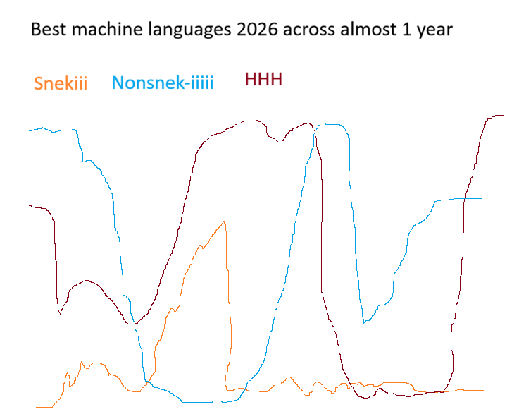

| whore | aka "hore" what someone is when saying some sorta: "I can do Rust as I did a lot C at early 2000s" see also: conceited, arrogant |
| conceited | aka con-seated wasted talent "He aimed good ideas at his allies und set his own to loserdom, [he was conceited, con-seated]" |
| arrogant | Somebody claiming hit keys 200 a minute using a randomly laid out board "Guy was arrogant, but dang was he handsome" |
| madness | When arrogance goes to distant "He brought his own ruin to madness" see justice |
| justice | When a man can't remember who he is |
| underminded | his mind database was sold to some rich idiot |
| beauty | When you see dumbness has a better light at someone |
| dumb | When you can't see beyond yellow roads, "he was dumb so he got a job" |
| non-righteous | What is deemed non-right by Lord my God see torment, horribleness |
| torment | To be assassinated at realms sharing your identity "He was made to be tormented" ",,, But his money was still good" |
| horribleness | justice, see justice |
| bible | see torment, torture see halleluah |
| torture | Hitting your own head to get ahead/"a head" |
| halleluah | To say you're owned by someone see sainted |
| sainted | To be able to handle contracts to your own "He was glad he was sainted, mostly" see human condition |
| human condition | Managing at not being a manager see blame |
| blame | What aliens do to bad humans see aliens |
| aliens | really bad humans |
| bad statistics |
 |